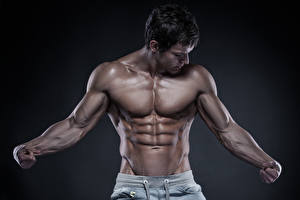

Going to the Gym can be as natural to some as showering or eating. But for most of us, it's something we try to unearth the energy to do at least once a week, and if we make it happen one tuesday for 30 minutes, we're supremely proud of ourselves. Your body might feel achy sore immediately after you exercise, and it probably won't feel too great during the workout,either. But strenghtening your body is keeping it in shape to fight off illness and prevenet it from becoming flabby and weak.